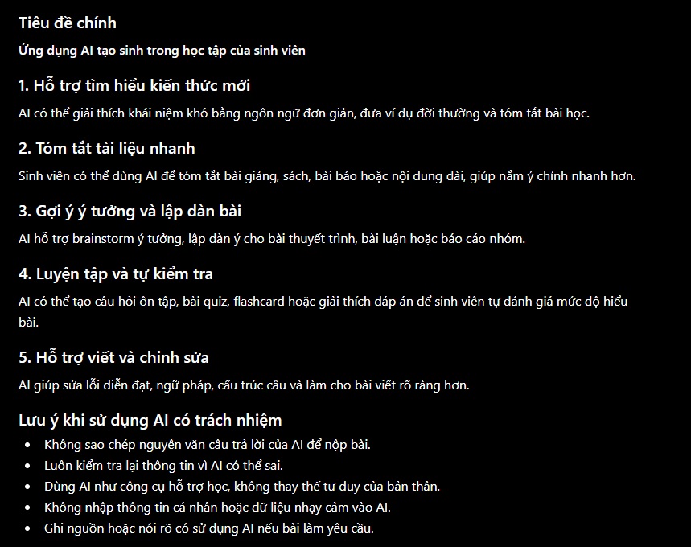
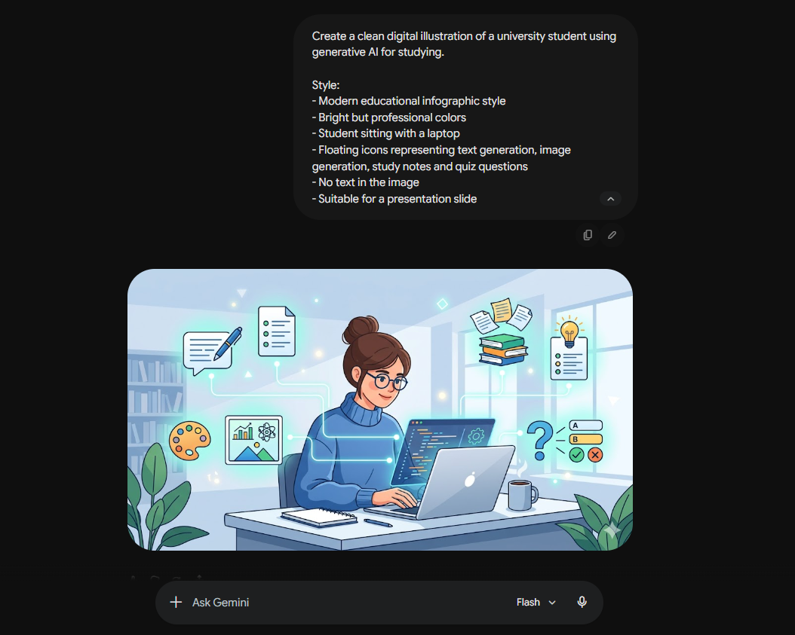
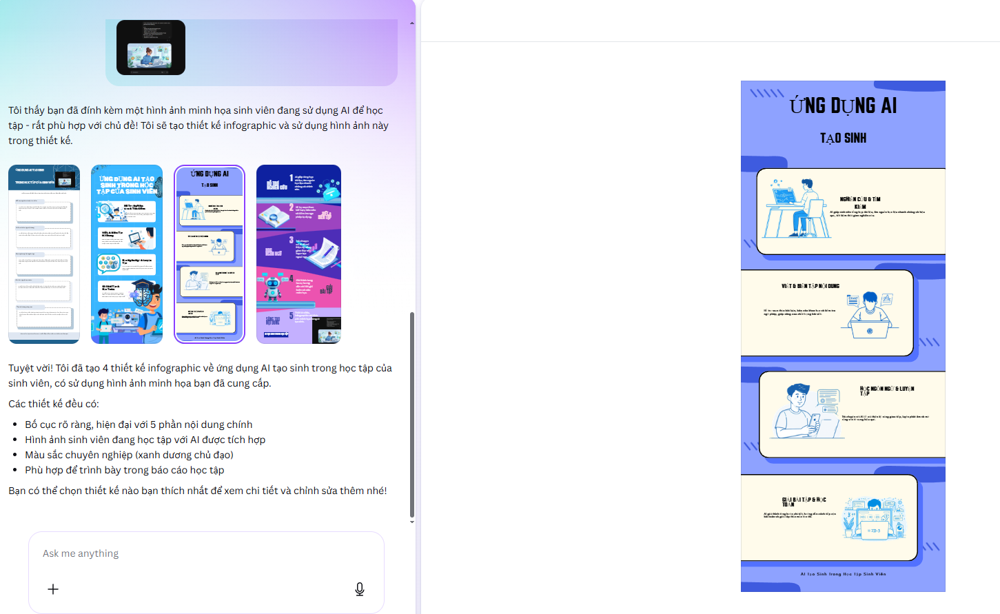
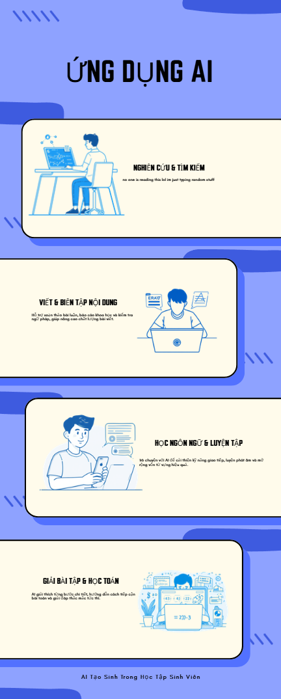

05
Bài tập 5
Sử dụng AI tạo sinh trong sáng tạo nội dung số
Bài tập này tập trung vào việc sử dụng các công cụ AI tạo sinh để hỗ trợ quá trình sáng tạo nội dung số. Dự án được lựa chọn là xây dựng một sản phẩm truyền thông/ học tập có sự kết hợp giữa văn bản, hình ảnh và thiết kế trực quan.
I. Tổng quan dự án
Dự án sáng tạo nội dung được chọn: Thiết kế một infographic/bài thuyết trình ngắn giới thiệu về chủ đề “Ứng dụng AI tạo sinh trong học tập của sinh viên”.
Mục tiêu của sản phẩm là trình bày một cách trực quan vai trò của AI tạo sinh trong học tập, bao gồm các lợi ích, hạn chế và những lưu ý đạo đức khi sử dụng. Sản phẩm cuối cùng được xây dựng bằng cách kết hợp đầu ra của nhiều công cụ AI với sự chỉnh sửa, chọn lọc và sáng tạo cá nhân.
- Công cụ AI tạo văn bản: ChatGPT được dùng để lên ý tưởng, viết dàn ý, đề xuất nội dung chính và chỉnh sửa câu chữ.
- Công cụ AI tạo hình ảnh: DALL-E hoặc một công cụ tạo ảnh tương tự được dùng để tạo hình minh họa cho chủ đề.
- Công cụ AI hỗ trợ thiết kế: Canva AI được dùng để gợi ý bố cục, phối hợp hình ảnh và hoàn thiện sản phẩm cuối cùng.
Trong dự án này, AI không thay thế hoàn toàn người làm bài mà đóng vai trò như một trợ lý sáng tạo. Người thực hiện vẫn cần lựa chọn ý tưởng phù hợp, kiểm tra nội dung, chỉnh sửa bố cục và đảm bảo sản phẩm cuối cùng có tính cá nhân.
II. Quy trình sử dụng AI
Quy trình thực hiện được chia thành ba giai đoạn chính: tạo nội dung văn bản, tạo hình ảnh minh họa và hoàn thiện thiết kế. Ở mỗi giai đoạn, nhóm sử dụng một công cụ AI phù hợp với chức năng của công cụ đó.
1. Tạo ý tưởng và nội dung bằng ChatGPT
ChatGPT được sử dụng để đề xuất ý tưởng, lập dàn ý cho infographic/bài thuyết trình và viết nội dung ngắn gọn cho từng phần.
Prompt đã sử dụng:
Kết quả nhận được: AI đưa ra cấu trúc nội dung gồm phần giới thiệu, lợi ích, ví dụ ứng dụng, hạn chế và lưu ý đạo đức. Tuy nhiên, một số câu còn chung chung nên cần chỉnh sửa lại.
Cách chỉnh sửa: Người thực hiện rút gọn nội dung, thay các câu dài bằng các cụm ngắn phù hợp với infographic, đồng thời thêm ví dụ gần với việc học như tóm tắt tài liệu, tạo câu hỏi ôn tập và giải thích khái niệm khó.
2. Tạo hình ảnh minh họa bằng AI tạo ảnh (Gemini)
Công cụ tạo ảnh được dùng để tạo hình minh họa về sinh viên sử dụng AI trong học tập, giúp sản phẩm trực quan và sinh động hơn.
Prompt đã sử dụng:
Kết quả nhận được: AI tạo ra hình ảnh có bố cục đẹp và phù hợp với chủ đề. Tuy nhiên, một số chi tiết nhỏ có thể chưa chính xác hoặc chưa đồng bộ với phong cách tổng thể của sản phẩm.
Cách chỉnh sửa: Chọn hình có bố cục rõ nhất, loại bỏ các ảnh bị lỗi chi tiết, sau đó cắt lại kích thước để phù hợp với slide hoặc infographic.
3. Thiết kế sản phẩm bằng Canva AI
Canva AI được sử dụng để hỗ trợ bố cục, chọn mẫu thiết kế và sắp xếp các thành phần như tiêu đề, nội dung, biểu tượng và hình minh họa.
Prompt đã sử dụng:
Kết quả nhận được: Canva AI gợi ý nhiều bố cục khác nhau. Một số mẫu có màu sắc đẹp nhưng nội dung quá nhiều, cần chỉnh sửa để tránh rối mắt.
Cách chỉnh sửa: Người thực hiện chọn một mẫu đơn giản, sắp xếp lại thứ tự nội dung, giảm lượng chữ trên mỗi phần và điều chỉnh màu sắc để sản phẩm dễ đọc hơn.
III. Phân tích và so sánh công cụ
Mỗi công cụ AI có vai trò riêng trong quá trình sáng tạo. ChatGPT phù hợp với việc tạo ý tưởng và xử lý ngôn ngữ; công cụ tạo ảnh phù hợp với việc tạo yếu tố thị giác; còn Canva AI hỗ trợ mạnh trong phần bố cục và hoàn thiện sản phẩm.
| Công cụ | Vai trò | Điểm mạnh | Hạn chế | Cách xử lý của người thực hiện |
|---|---|---|---|---|
| ChatGPT | Tạo ý tưởng, dàn ý, nội dung mô tả | Nhanh, dễ chỉnh sửa, có thể tạo nhiều phiên bản nội dung khác nhau. | Một số câu trả lời còn chung chung, cần kiểm tra lại độ chính xác và sự phù hợp. | Chọn lọc ý chính, viết lại bằng ngôn ngữ cá nhân và rút gọn cho phù hợp với thiết kế. |
| AI tạo hình ảnh | Tạo hình minh họa cho chủ đề | Tạo ảnh nhanh, nhiều phong cách, giúp sản phẩm trực quan hơn. | Có thể tạo ra chi tiết sai, hình ảnh chưa đúng hoàn toàn với yêu cầu. | Lọc ảnh phù hợp, không dùng ảnh lỗi, chỉnh kích thước và vị trí khi đưa vào sản phẩm. |
| Canva AI | Hỗ trợ bố cục và thiết kế cuối cùng | Dễ sử dụng, có nhiều mẫu đẹp, hỗ trợ sắp xếp nội dung nhanh. | Một số mẫu có bố cục rối hoặc dùng quá nhiều yếu tố trang trí. | Chọn bố cục đơn giản, chỉnh lại màu sắc, giảm chữ và sắp xếp lại nội dung. |
Qua so sánh, có thể thấy AI tạo sinh hiệu quả nhất khi được sử dụng theo từng vai trò cụ thể. Nếu chỉ dùng một công cụ duy nhất, sản phẩm dễ bị thiếu cân bằng: có thể có nội dung tốt nhưng hình ảnh yếu, hoặc có thiết kế đẹp nhưng nội dung chưa sâu. Việc kết hợp nhiều công cụ giúp quy trình sáng tạo linh hoạt hơn.
Tuy nhiên, kết quả AI tạo ra không nên được sử dụng nguyên bản. Người thực hiện cần kiểm tra, chỉnh sửa và đưa vào dấu ấn cá nhân. Trong sản phẩm cuối cùng, phần AI hỗ trợ chủ yếu là tạo gợi ý ban đầu, còn phần quyết định nội dung, lựa chọn bố cục và hoàn thiện sản phẩm vẫn do người thực hiện đảm nhiệm.
IV. Vai trò của AI trong quá trình sáng tạo
1. Những phần AI làm tốt
AI làm tốt ở giai đoạn khởi tạo ý tưởng. Thay vì bắt đầu từ một trang trống, người thực hiện có thể yêu cầu AI đề xuất nhiều hướng triển khai khác nhau. AI cũng hỗ trợ tốt trong việc rút gọn văn bản, đề xuất tiêu đề, tạo nội dung theo cấu trúc và gợi ý cách trình bày.
Với hình ảnh và thiết kế, AI giúp tiết kiệm thời gian tìm kiếm tài nguyên. Các công cụ tạo ảnh có thể tạo ra hình minh họa phù hợp với chủ đề, còn Canva AI giúp người dùng nhanh chóng có bố cục ban đầu để tiếp tục chỉnh sửa.
2. Những phần AI còn hạn chế
AI vẫn có hạn chế về độ chính xác, tính nhất quán và khả năng hiểu hoàn toàn ý đồ sáng tạo của người dùng. Nội dung do AI viết có thể đúng về mặt tổng quát nhưng thiếu ví dụ cụ thể. Hình ảnh do AI tạo có thể đẹp nhưng đôi khi có lỗi chi tiết hoặc không phù hợp hoàn toàn với yêu cầu ban đầu.
3. AI thay đổi quy trình sáng tạo như thế nào?
Trước đây, quá trình sáng tạo thường bắt đầu bằng việc tự tìm ý tưởng, tìm hình ảnh, viết nội dung và thiết kế thủ công. Khi có AI, quy trình này trở nên nhanh hơn: người thực hiện có thể tạo nhiều phương án trong thời gian ngắn, sau đó chọn lọc và chỉnh sửa.
Tuy nhiên, điều này cũng làm thay đổi vai trò của người học. Người học không chỉ là người “nhận kết quả” từ AI, mà phải trở thành người định hướng, đánh giá và biên tập. Chất lượng sản phẩm phụ thuộc nhiều vào khả năng đặt prompt, khả năng nhận xét kết quả và khả năng chỉnh sửa đầu ra.
4. Vấn đề đạo đức cần cân nhắc
Khi sử dụng AI trong sáng tạo nội dung, cần minh bạch về việc có sử dụng công cụ AI. Người thực hiện không nên trình bày toàn bộ sản phẩm như thể hoàn toàn do mình tạo ra nếu phần lớn nội dung đến từ AI. Ngoài ra, cần kiểm tra bản quyền hình ảnh, tránh sử dụng nội dung gây hiểu lầm và không sao chép nguyên văn đầu ra của AI mà không có chỉnh sửa.
Một vấn đề khác là sự phụ thuộc quá mức vào AI. Nếu chỉ dùng AI để tạo toàn bộ sản phẩm, người học có thể giảm khả năng tự tư duy và sáng tạo. Vì vậy, AI nên được dùng như công cụ hỗ trợ, không phải công cụ thay thế hoàn toàn quá trình học tập và sáng tạo.
V. Quá trình thực hiện



